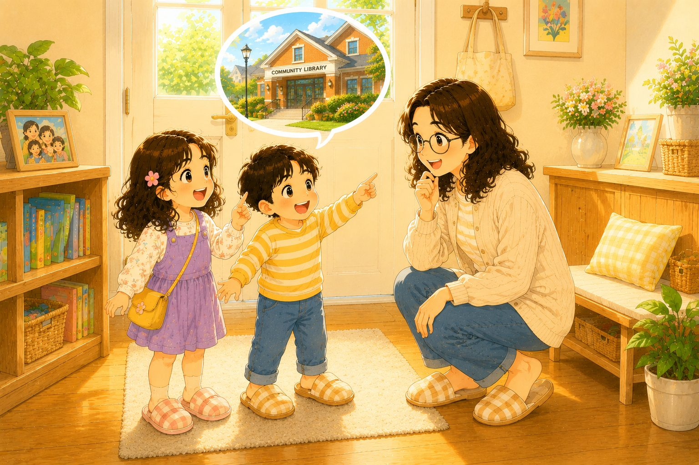
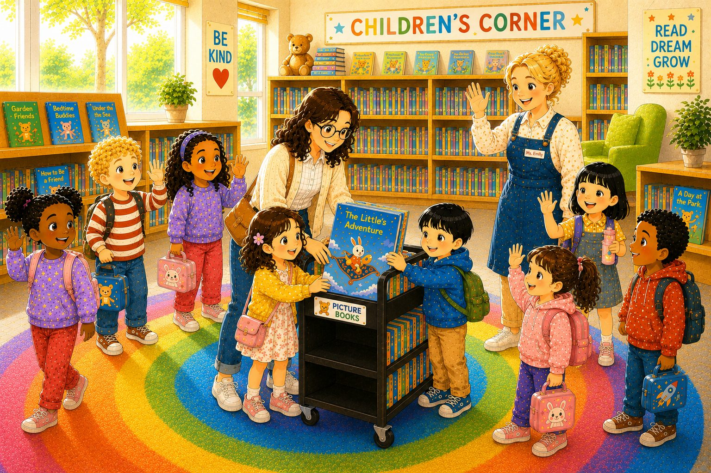

方阿姨想知道我們在美國的生活，芊芊和小宇決定帶她去最喜歡的圖書館。
👆 點我聽故事
第 1 頁
出門前，媽媽笑著對小宇說：「去圖書館穿拖鞋不方便喔！」
👆 點我聽故事
第 2 頁
在路上，他們遇見鄰居婷婷。婷婷說：「今天有童話故事時間喔！」
👆 點我聽故事
第 3 頁
進了圖書館後，大家靜靜地坐下，一起聽故事。
👆 點我聽故事
第 4 頁
今天的童話故事裡，有一隻愛吃甜甜圈的小兔子。
👆 點我聽故事
第 5 頁
故事裡的小兔子蹦蹦跳跳地穿過糖果森林，還坐上飛毯，飛呀飛。
👆 點我聽故事
第 6 頁
飛毯越飛越高，高高地飛到天空中。一朵朵白雲飄呀飄，好像甜甜的棉花糖。
👆 點我聽故事
第 7 頁

故事說完了，大家都很喜歡。我們把童話書放回推車。
👆 點我聽故事
第 8 頁
回家的路上，小宇一直想著那隻愛吃甜甜圈的小兔子。
👆 點我聽故事
第 9 頁
藍色加粗 = ㄊ 發音的字 ✦ 點擊句子可聽故事朗讀